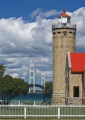

Enjoy Fine Dining and
Entertainment at Lighthouse Point

The Lighthouse Bistro offers fine dining and entertainment a stones throw from the Old Mackinac Point Lighthouse on the Straits of Mackinac. The lighthouse was build in 1892 as a sentinel for vessels entering the Straits of Mackinac. Open year round. Yes, even in the winter! Stop in for a mug of one our specialty coffees after your hike.
- Specialty Coffee and Teas
- Bagels, Muffins, and Organic Snacks
- Clam Strips, Oysters, and Fresh Fish served daily
- Music and Poetry Readings
- Open Mic Night Every Friday starting at 8:00pm